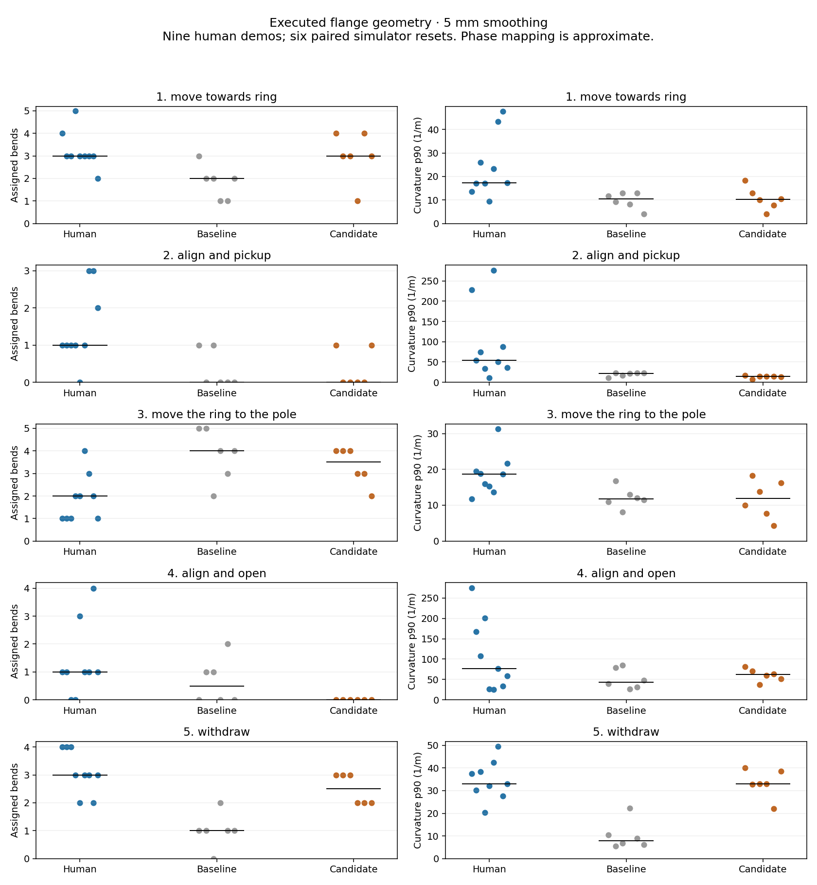

← All motion-comparison galleries
Tune and play the candidate in Viser · Original controller · Human reference analysis
Independent per-waypoint offsets were replaced with coherent residual path shapes from individual annotated demonstrations. A whole example supplies the phase shapes for a run. Shapes are adapted to new endpoints with bounded deviations; exact grasp/place endpoints, vertical extraction, smooth wrist variation and curvature-dependent timing remain.
All six completed paired-seed previews passed independent physical replay: zero unwanted contacts and a supported, aligned, stationary stack after release and withdrawal throughout the final second. Two earlier concurrent attempts timed out before recording steps; these were preserved and rerun sequentially. This is a six-reset pilot, not a general success-rate estimate.
Shape improvement is clearest in reach and withdrawal. Alignment remains a mismatch and transport is only modestly closer. The current simulator phase mapping uses controller guards and can assign a correction to an adjacent phase; inspect the paths and videos, not counts alone. Human ring insertion and robot block stacking also demand different behavior.
| Median assigned bends, 5 mm | Human (9 demos) | Baseline (6 paired resets) | Candidate (same 6 resets) |
|---|---|---|---|
| Reach | 3 | 2 | 3 |
| Transport | 2 | 4 | 3.5 |
| Withdraw | 3 | 1 | 2.5 |
Withdrawal spatial curvature p90: human median ≈32/m; baseline ≈8/m; candidate ≈33/m. These are scalar summaries of individual paths; trajectories were not averaged. Training remains held.
Each clip has front and side views. Playback is 1× simulation time. Both controllers start from the same object reset; their durations differ.
Same Panda flange FK and whole-path detector as the human study. Each point represents one episode-phase; horizontal lines are medians. The controller's phase boundaries are approximate semantic labels. Contact corrections are small and final contact motion remains constrained.

Paired results · Full executed curves and 2/5/10 mm analysis